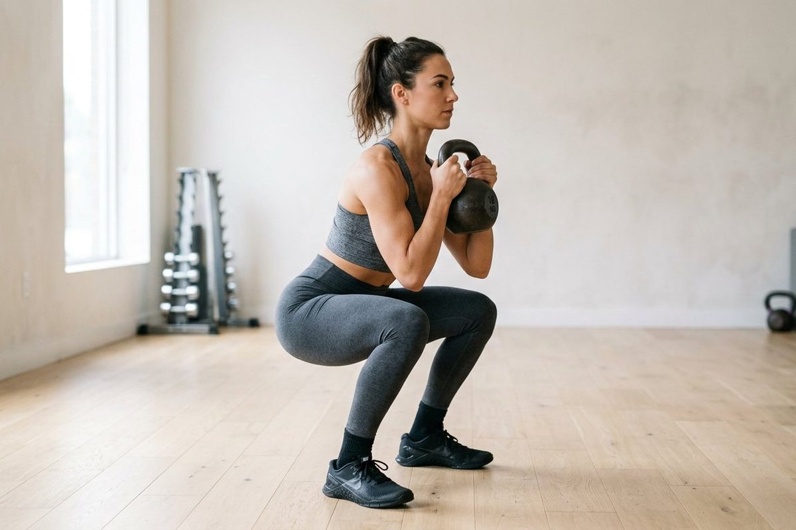

How to Goblet Squat With Perfect Form
If you only ever learn one strength exercise, make it a squat. It is the movement you use every time you stand up from a chair, and it loads the largest muscles in your body. The goblet squat is the version we teach first, because holding the weight in front of your chest does three useful things at once: it keeps your torso upright, it gives your knees somewhere to travel, and it teaches depth without a coach shouting at you.
